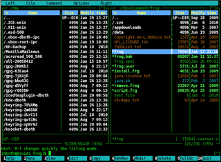

В Midnight Commander много предустановленных скинов (цветовых схем). В версии 4.8.26 доступно 36 цветовых схем "из коробки".

Цветовую схему можно выбрать в меню:
Настройки - Оформление
Однако в интерфесе MC нет возможности тонко настроить выбранный скин. Приходится пользоваться теми, темами, что есть с такими настройками, которые они задают. Но, все-таки, настройки скинов можно самостоятельно поменять.
Сами скины лежат в каталоге:
/usr/share/mc/skins
Файлы скина представляют из себя INI-файлы. (И если в них заглянуть, то можно заметить, что в них настраиваются не только цвета, но и символы, видимые на экране. Например там настраиваются символы линий).
Цвета кодируются так:
элемент = цветСимвола;цветЗаднегоФона;начертание
Часть начертание вместе с точкой с запятой можно не указывать. Но если ее указать, то доступные значения - bold, чтобы символы выводились жирным шрифтом.
Внимание! Наличие модификатора bold может сильно искажать цвета! Вместо черного на белом фоне вполне может отображать серый на белом.
Цвета могут задаваться по именам. Чистые цвета имеют названия:
black
white
gray
red
blue
green
yellow
Так же, найдены следующие обозначения цветов:
brown
magenta
cyan
lightgray
brightred
brightgreen
brightmagenta
brightcyan
brightblue
На просторах интернета можно найти такую таблицу:
+--------------------------+---------------------------------+
|Цвета, используемые |Цвета, используемые |
|как для текста, |только для текста |
|так и для фона | |
+===========+==============+===============+=================+
| black | чёрный | gray | серый |
+-----------+--------------+---------------+-----------------+
| red | красный | brightred | розовый |
+-----------+--------------+---------------+-----------------+
| green | зелёный | brightgreen | светлозеленый |
+-----------+--------------+---------------+-----------------+
| brown | коричневый | yellow | жёлтый |
+-----------+--------------+---------------+-----------------+
| blue | синий | brightblue | светлосиний |
+-----------+--------------+---------------+-----------------+
| magenta | пурпурный | brightmagenta | светлопурпурный |
+-----------+--------------+---------------+-----------------+
| cyan | голубой | brightcyan | голубой |
+-----------+--------------+---------------+-----------------+
| lightgray | светло-серый | white | белый |
+-----------+--------------+---------------+-----------------+
Кроме имен цветов, цвета можно задавать в RGB-виде: от rgb000 до rgb555. Видно, что доступно всего шесть градаций на одну цветовую компоненту. Для консольных цветов большая точность не требуется.
Помимо имен цветов могут использоваться номера цветов. Для 16-ти цветной палитры можно использовать имена цветов color0 ... color16.
Для 256-цветной палитры изпользуются имена color16 ... color255. Как по номеру цвета понять какой это цвет - пока неясно. В любом случае, по-умолчанию используется 16-ти цветная палитра. Для использования 250-цветной палитры требуется в разделе [skin] выставить опцию:
256colors = true
Однако следует учитывать, что цвета отображаются согласно палитре, настроенной в терминале. Для Konsole настройка цветов находится здесь:
Настройка - Настроить профиль - Внешний вид - Цветовая схема и шрифт
Обычно, чтобы увидеть чистые цвета, надо выбрать преднастроенную палитру Белый на черном. Палитра Breeze будет давать в консоли подвеченные/выцвевшие/выгоревшие цвета, которые смотрятся очень бледными.
Хинт: узнать информацию о настройке цветов можно с помощью команды:
mc --help-color
Для применения настроек, внесенных в INI-файл текущей цветовой схемы, надо выйти из MC и повторно его запустить.